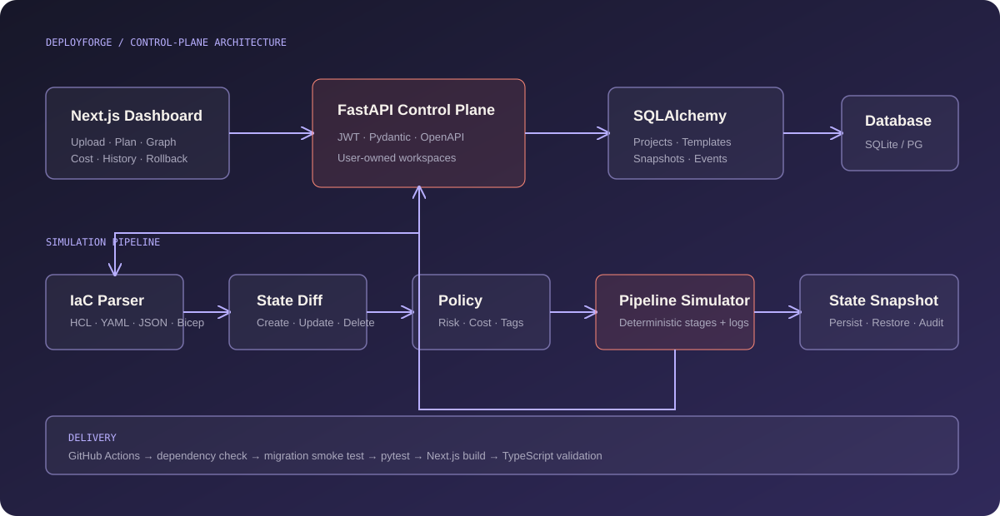
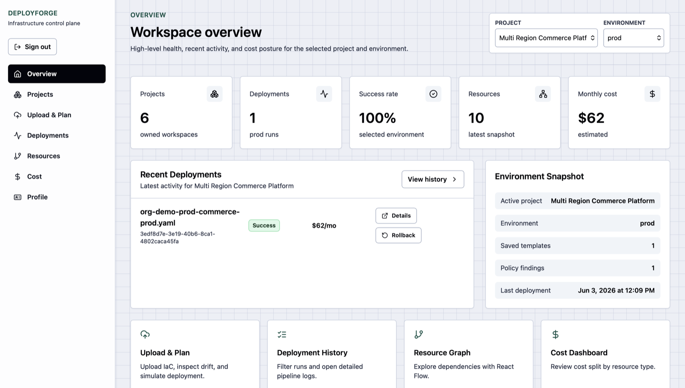
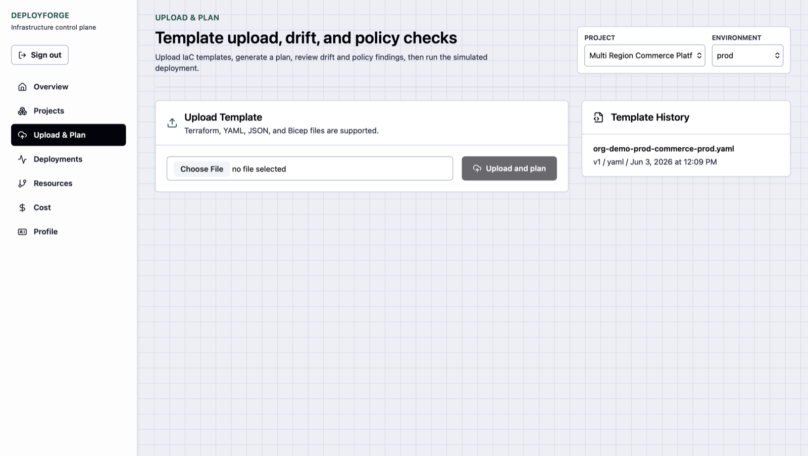
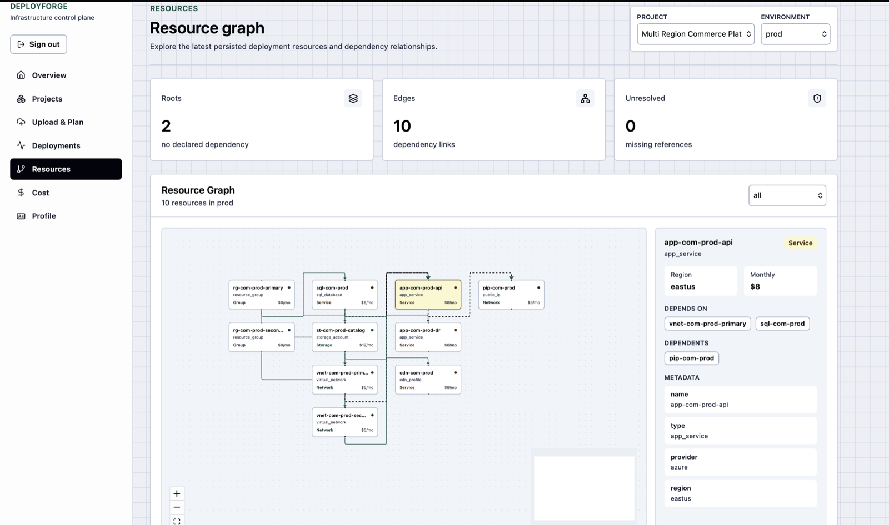

Operational dashboard
Next.js, TypeScript, React Flow dependency graphs and Recharts cost views.
A simulation-first infrastructure deployment control plane that demonstrates enterprise cloud workflows without risky live provisioning.
Live infrastructure platforms are expensive and unsafe to demonstrate. The project still needed to prove desired-state planning, policy enforcement, drift awareness, cost visibility, history and rollback judgment.
Users upload an IaC template, review parsed resources and proposed changes, run policy validation, simulate pipeline stages, and persist a new environment snapshot.
Upload → Parse → Validate → Compare state → Plan → Policy checks → Simulate → Persist → Graph · Cost · History · Rollback

Next.js, TypeScript, React Flow dependency graphs and Recharts cost views.
FastAPI, Pydantic and SQLAlchemy with JWT-protected routes and Swagger.
Alembic-managed relational data for deployments, resources and rollback events.
GitHub Actions validates migrations, tests, frontend build and type safety.


